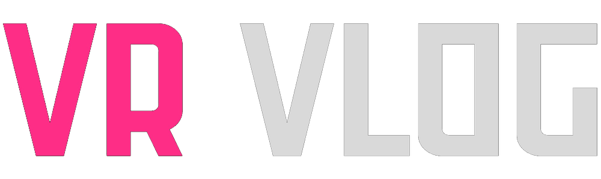

lilToonの設定を引き継ぐ
色、影、発光、MatCap、輪郭線などの対応設定を保存。通常のVRMビューアー向けに、MToonの互換表示も含めます。

CREATOR TOOLSLILTOON → VRM 1.0
お気に入りの見た目も、表情も、VR Vlogへ。
lilToonのアバターを、撮影に使えるVRM 1.0にまとめて書き出すUnity用エクスポーターです。
対応する材質・表情を変換します。対応範囲を見る
色、影、発光、MatCap、輪郭線などの対応設定を保存。通常のVRMビューアー向けに、MToonの互換表示も含めます。
BlendShapeで調整した顔を基本の形に。対応するVRChatのメニュー・ジェスチャー表情を自動で取り込みます。
一時コピーから書き出すので、元のアバターや材質を変更しません。保存前にファイルを検証します。
Unityでアバターを開き、撮影したい衣装・パーツを有効にします。非表示の衣装は書き出し対象に含まれません。
Unityのメニューから開き、Hierarchyのアバター最上位と、VRMに記録する作者名を指定します。
VR Vlog >
lilToon VRM 1.0を書き出す「保存先を選んでVRMを書き出す」を押し、保存先を指定。できた.vrmファイルをiPhoneへ送り、VR Vlogで読み込みます。
読み込んだら、見た目・まばたき・口・表情の動きを確認してください。省略された設定などの詳細は、Unity Consoleの「VR Vlog 書き出し詳細」で確認できます。
ファー、屈折、AudioLinkなどは近似・省略されます。材質・表示・ボーンの変更を伴う表情や、ビルド時に生成されるメニューなども対象外です。
動くジェスチャー表情は、対応版のVR Vlogで再生できます。追加データに未対応のビューアーでは、MToonの互換表示と静止した表情を使用します。
VRChatのプロジェクトでは、VCCが案内する対応Unityバージョンを使ってください。アバターや衣装の利用条件を確認してから書き出してください。
通常はVCC・ALCOMからエクスポーターだけを選んでください。以下は自動で導入されるUniVRMのパッケージです。ZIPで手動導入する場合は、依存パッケージも必要になります。
{{~ for package in packages ~}} {{~ if package.Name != "com.vrvlog.liltoon-vrm-exporter" ~}}{{ package.Name }}